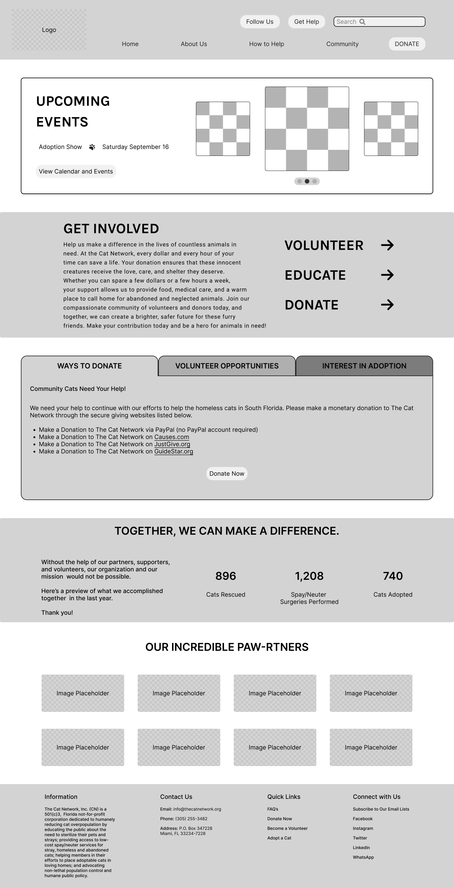

Objectives
Project Description: Our goal was to test and analyze the function of elements, improve, and reconstruct the Cat Network's current website design while evaluating website heuristics and usability to ensure ease of use and display information efficiently. Team Members: Alejandra Penas, Eleana Gomez, Jasmine Pierce, Valentina Colmenares Tools Used: Figma, FigJam, Google Drive, Google Slides, Google Docs. Project Overview The Problem:The current website for the non-profit organization, The Cat Network, has issues with user clarity on how to find information about volunteer opportunities, how to adopt available cats and how to best educate the public on the social issues that they aim to correct. The Solution: A reorganization and redesign of the main navigation, as well as providing more visual aids to the user for how to navigate the website in order to complete their tasks and be better informed of the number of ways in which the user can provide support to the nonprofit organization.
Research
Our research began with a heuristic evaluation of the home page, about page and volunteer page. We found that the website lacked depth, using white space inappropriately. The website's main functions were unclear, and users often could not find the information they were looking for, or had to go through multiple screens to complete a main task. The team developed interview questions after defining a persona, placing ourselves in the user's shoes. The interview began with introductory questions about the interviewee's demographics, and then dove into the main lines of questioning. Our topics sought to define the interviewee's level of experience participating in community service programs, what drives users to support nonprofits, affinity towards caring for animals, and their opinions on education about community issues. After conducting our interviews we found that most users have some level of experience in volunteering, most notably for food banks. All interviewees were pet owners, having either a dog, cat or both. All interviewees identified as animal lovers, and expressed willingness to aid local animals in need. Next, the team looked at three websites of similar nature, Stray Paws Safe Haven, Alley Cat Allies, and the Feral Cat Program of Georgia. We analyzed the sites to identify must-have features for other animal non-profit organizations. We decided to prioritize that users are able to easily identify a donate button, include current events, and easily learn about ways to get involved or support the organization as the most important features to include in our redesign.
Affinity Diagram

Feature Prioritization

User Persona

User Flow

Sketches

We began the design process with a sketch of the Home Page. We placed “About Us,” “How to Help,” “Community,” and “Donate” on the main navigation, as our research showed that these were most often used by people using animal nonprofit websites.

We then went onto designing the About Us Page, including a mission statement, some background information about the organization, list of partners for reputability, and a fillable contact form at the bottom of the page.

We then went onto our How to Help Page, which included the most important information for the function of our non profit. This page informs users of volunteer opportunities with eye catching images and includes a fillable volunteer form.
Wireframes
Home page wireframe.

About page wireframe.

Volunteer page wireframe.
High Fidelity prototype
.png)
.png)
.png)
Summary
After successfully redesigning the Cat Network's website, there are several future steps to consider in order to maintain and enhance its effectiveness: Regular Maintenance: Continue to maintain and update the website to keep it running smoothly. This includes fixing any bugs or technical issues that may arise, updating content, and ensuring compatibility with new web technologies. Content Updates: Keep the website's content fresh and relevant. Regularly update information about the organization's programs, events, and success stories. Highlight new initiatives and achievements. Monitoring and Analytics: Implement website analytics tools to track user behavior and engagement. Analyze data to understand how visitors interact with the site, which pages are most popular, and where users might encounter difficulties. Use this information to make data-driven decisions for further improvements. User Feedback: Encourage and collect user feedback through surveys, contact forms, or social media. Pay close attention to user comments and suggestions, and use this feedback to make continuous improvements to the website. Mobile Optimization: Ensure that the website is mobile-friendly and responsive. With an increasing number of users accessing websites via mobile devices, it's crucial to provide a seamless experience on all screen sizes. Accessibility: Ensure the website complies with accessibility standards to make it inclusive and accessible to all users, including those with disabilities. Social Media Integration: Promote the website and its content through social media channels. Encourage sharing and engagement to reach a wider audience and increase support for the nonprofit's cause. Continuous Improvement: Maintain a culture of continuous improvement by regularly reviewing the website's performance, seeking user feedback, and adapting to changing technology trends and user needs. By following these steps, we can ensure that the Cat Network's website remains an effective tool for raising awareness, engaging supporters, and furthering the organization's mission.